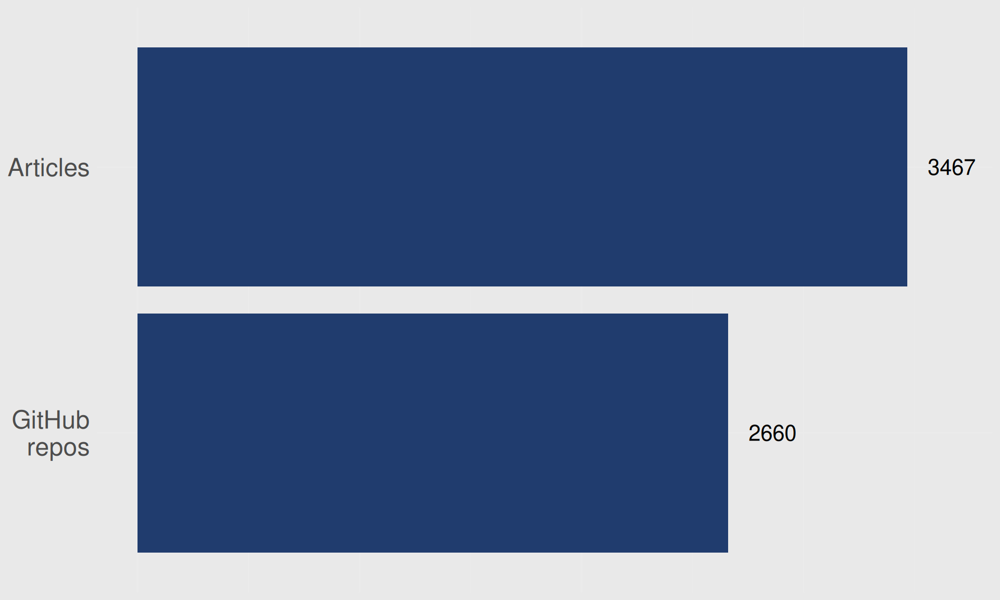

gantt
dateFormat YYYY-MM-DD
axisFormat %Y-%m
todayMarker off
MSc (UofT) :msc, 2011-09-01, 2y
PhD (UofT) :phd, after msc, 4y
Postdoc (UofT) :postdoc, after phd, 2018-02-01
Postdoc (AU) :postdoc2, after postdoc, 2019-12-31
Postdoc (SDCA) :postdoc3, after postdoc2, 2022-06-01
Team leader (SDCA) :teamleader, after postdoc3, 2025-10-30
Research is more than just publications—you are worth more than your publications
Luke W. Johnston
October 30, 2025
Aim of talk
Most important: Reminder that publications aren’t your only or biggest metric of success
Share a bit of my own career path
Highlight gaps that you can specialise in for your own career
Who am I? 👋 👋
Academic path
MSc and PhD: Non-traditional work
In addition to my research…
PROMISE data: Organized data into an R package structure.
UofTCoders: Graduate student-led group to teach R and Python to other peers.
Learning to effectively organize files and to code = powerful productivity booster
During postdoc: Hard lessons learned
We are woefully behind on basic data engineering, reproducibility, and programming practices.
Postdoc: Data organization, development, and management
ukbAid: R package and website for UK Biobank data management and analysis.
DARTER Project: Website of application to and documentation on a Denmark Statistics project.
registers2parquet: Package to convert Danish health registries into Parquet format for easier use with big data tools.
Postdoc: Created and ran workshops (and still do!)
Introductory course: r-cubed-intro.rostools.org
Intermediate course: r-cubed-intermediate.rostools.org
Advanced course: r-cubed-advanced.rostools.org
Problems arising during postdoc: Published few papers
After my PhD, no first author publications.
Too many deep problems that needed fixing.
Focused on building software, tools, and teaching.
Choice: Ignore all broken things and publish or keep trying to fix things?
I chose to keep fixing things!
It wasn’t a hard choice, I couldn’t ignore the problems.
I was invited to help apply for a grant because of my work
For Data Infrastructure grant from Novo Nordisk Foundation
Got the funding 🎉 which is my current work
Seedcase Project, a framework for building infrastructure for research data.
Research must learn to value more than just publications
Why? We have big problems that need fixing!
Reproducibility: A major issue we completely ignore


Science is not about trust, it’s about verification 🤔
Some trust is needed, but shouldn’t be dependent on it.
Desperately need more deep programming expertise!
As in, their main work is programming, not publishing papers.
“Science as amateur software development”
“But the code runs!”
From this academic presentation.
Analyzing large data (and reproducing the results) requires programming skills
With massive data, you really need to know how to code and programming.
But, researchers are not trained for this kind of skill.
Desperately need research-specific software!
So many research-specific problems that could be fixed with software.
Need more high-quality data
Data is hard to build, manage, and maintain. It takes time and effort.
Take home pieces of advice?
There are so many opportunities outside of academia
And they clear even less about publications.
Your skills, knowledge, and experiences are worth more than your number of publications
So: Find problems you enjoy fixing and dive deep!
Even if that means less publications.
Licensed under CC-BY 4.0.
Slides at slides.lwjohnst.com